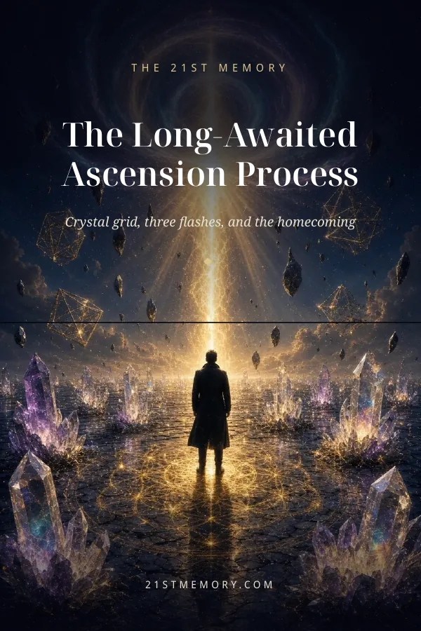
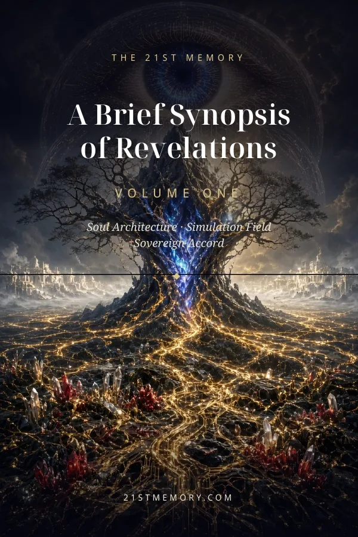
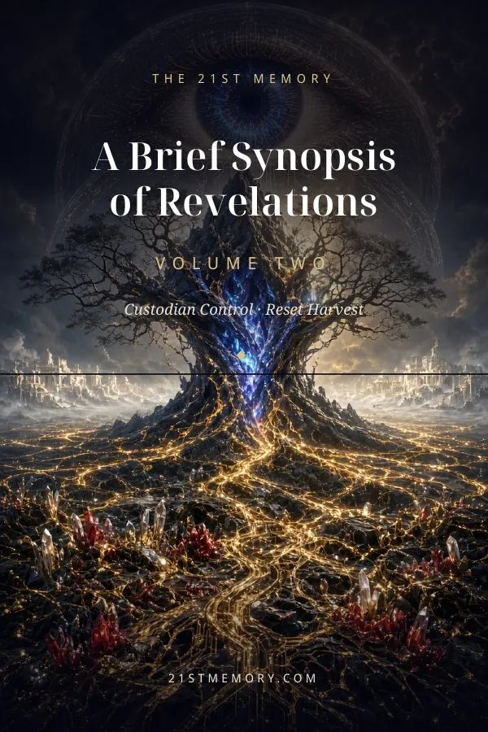

39 topics · 293 pages
The Long-Awaited Ascension Process
Crystal grid, three flashes, and the homecoming
Free books · PDF + EPUB
The archive in book form. Each book gathers one Codex series — every written report with its infographic — as a free PDF and EPUB you can read anywhere, offline, and share with anyone.
The reports were created with AI from the original Thalon Thor / Christian21 transmissions, organized and illustrated to make them easier to follow. They are not the transmissions themselves — the originals live at christian21.com, and whenever anything here feels incomplete, the original transmission is the final word.
Free, and always free. No religion, no finance, no gatekeeping.
The Long-Awaited Ascension Process

39 topics · 293 pages
Crystal grid, three flashes, and the homecoming
A Brief Synopsis of Revelations

Volume One · Chapters 1–43 · 365 pages
Essence · Soul Architecture · Simulation Field · Sovereign Accord

Volume Two · Chapters 44–89 · 352 pages
Custodian Control · Reset Harvest
Volume Three · Chapters 90–118 · 232 pages
Tartarian Memory · Organic Circuitboard